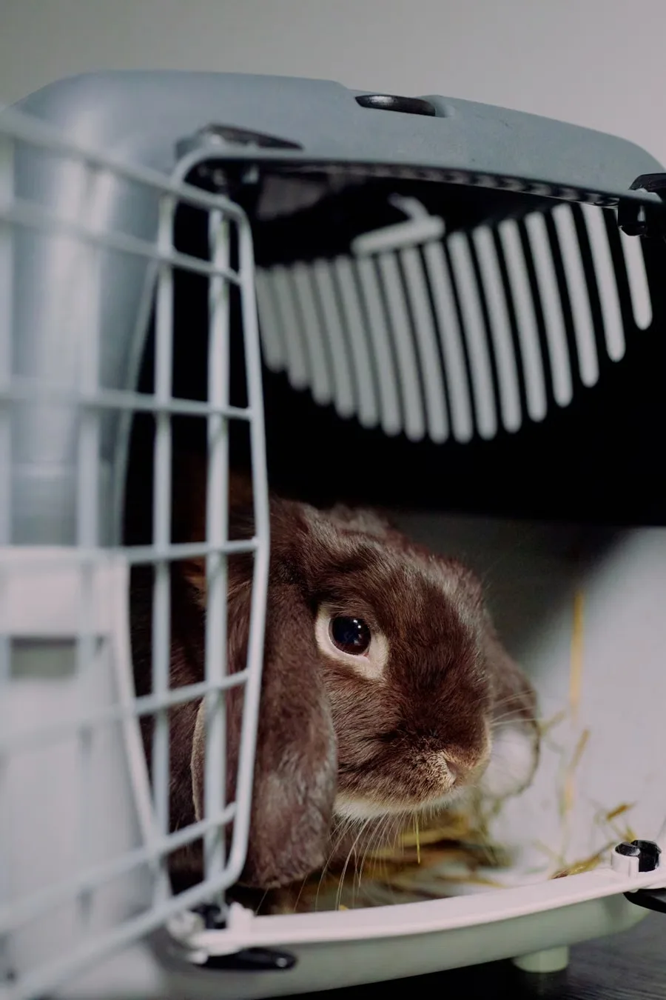

Serviços
Assessoria para cada rota.
Da escolha do trajeto à organização dos documentos, o atendimento parte do destino e das particularidades do seu animal.

Frentes de orientação
Planejamento da viagem
Avaliamos origem, destino e possíveis conexões para entender o que precisa ser preparado para o seu animal. Se as datas ainda estão em aberto, podemos começar pelo itinerário em estudo.
Orientação documental
Ajudamos a identificar os documentos solicitados para o trajeto e a organizar os registros que você já tem. A lista considera a espécie do animal e as particularidades do destino.
Preparação sanitária
Orientamos sobre as exigências sanitárias aplicáveis à viagem. Com essas informações, você pode organizar os cuidados necessários com o médico-veterinário que acompanha seu pet.
Orientação para o embarque
Ajudamos a identificar os pontos a confirmar com a transportadora, como as condições de aceitação e as especificações da caixa de transporte para o trajeto escolhido.
Próximo destino
Para onde vocês vão?
Conte um pouco sobre seu pet e a viagem que está planejando.